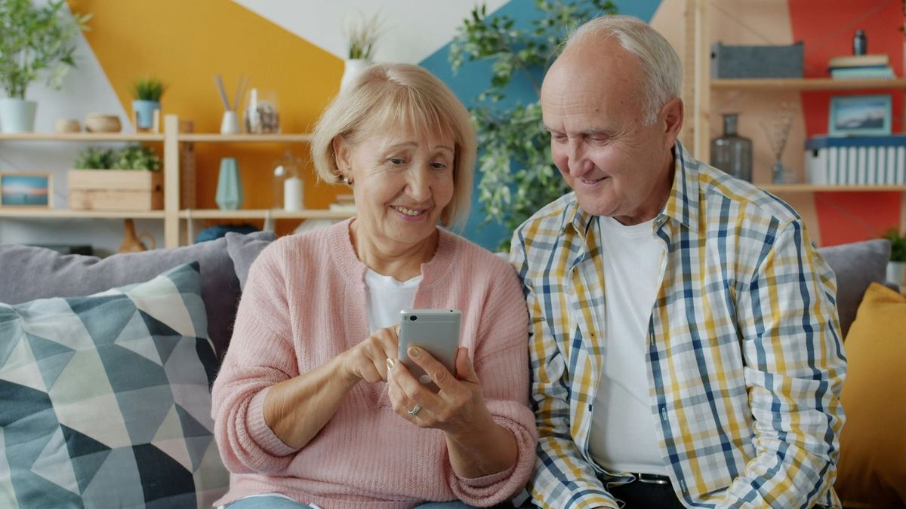

- Free for everyone
- Independent
- For every age
Take a second look.
A free thinking habit for every age. Pause, stay curious and decide for yourself, whether it’s a scam call, a fake clip, a rumour or a hateful post.
Not a scam checker. Not a fact-checker. A thinking habit you keep for life.
Say it “second scan”. No adverts, no account and no tracking.

Take a second look
Who’s really calling, and why?
How it works
Three questions. Any age. Anywhere.
2ndScan doesn’t tell anyone what to think. It asks the questions that help you think things through, then leaves the decision with you.
- Who’s saying this, and why?
- What might be missing?
- What do I really think now?
The questions work at nine and at ninety, on a screen or on the doorstep. The aim isn’t for anyone to need 2ndScan forever. It’s for the questions to become a habit that goes with you. Success means people need us less.
Why a habit
Why a habit, not another app?
AI is now part of everyday life at every age, and it’s getting harder to tell what’s real.
-
54%
of UK adults say they use AI tools, up from 31% a year earlier.
-
64%
of 9 to 17-year-olds in the UK have used AI chatbots.
-
47%
of UK adults say it’s becoming harder to tell what’s genuine online.
National Trading Standards, Censuswide poll of 2,000 UK adults, September 2026
The answer isn’t to fear everything. It’s a calm habit anyone can learn.
Banks, phone companies and charities are doing important work to protect people, and it’s getting better all the time. But each one protects its own customers, in its own app, for as long as it runs. The tricks simply move to where the warnings can’t reach: the doorstep, the phone call, the family chat.
A habit goes wherever you go. It works without a screen, it doesn’t go out of date when the tricks change, and you can pass it on to the people you love. Once you’ve learned it, it’s yours for life. That’s how 2ndScan can stay free for everyone, forever.
-
Works without a screen
About 1.4 million people over 65 in England don’t go online at all. Three questions work at the door and on the phone too.
-
Doesn’t go out of date
National Trading Standards warns that old tell-tale signs, like spelling mistakes, can no longer be relied on to spot scams made with AI. Asking who’s behind a message, and why, still works.
-
Works at the moment you decide
Protection is improving: fraud where money is taken without permission fell 5% in 2025. Scams that persuade people to send money themselves rose 19%, to £576 million.
-
Made to be shared
One in three UK adults (35%) helped another adult use the internet in the past year, most often a relative. Shared questions give families a shared language.
Tools change. Tricks change.
A habit stays with you.
Three examples
One skill, three disguises.
Scams, AI fakes, rumours and hate look different, but they pull the same levers: tricks that push us to act before we think. A lever means slow down and check. It doesn’t always mean fake. Pick an example and take a second look.
Invented examples, not live checks.
Where 2ndScan fits
Alongside the good work already happening.
Valuable work is already happening across the UK. 2ndScan is designed to sit alongside it and point people to it, not compete with it.
-
Banks and phone companies
Build scam warnings into their apps and networks, and they’re getting better all the time.
2ndScan adds a habit that works whoever you bank with, and away from a screen.
-
Scam awareness campaigns
Warn people about the latest scams and how they work.
2ndScan adds questions that still work when the tricks change, and work on rumours and hate too.
-
Fact-checkers
Investigate claims and publish verdicts.
2ndScan adds the questions to ask first, and a nudge towards their work.
-
Schools and media literacy
Teach critical thinking to children, mostly in the classroom.
2ndScan adds the same skills at every age, and one shared language for whole families.
-
Digital skills help
Helps people get online and use services safely.
2ndScan adds thinking about what you see once you’re online, and offline too.
-
Not a scam checker. Not a fact-checker. A thinking habit.
Where others give a verdict, 2ndScan gives you the questions and leaves the decision with you.
Research
Built to be tested, not just trusted.
Before 2ndScan becomes an app, or anything else, we want independent researchers to find out whether the habit works, for whom, and whether it lasts. We’ll publish what we find, good or bad.
What the research says so far
Learning common manipulation tricks in advance seems to help. A review of 33 experiments with more than 37,000 people found it helped people tell credible news from manipulative news, without making them distrust credible news. Not every researcher agrees, which is exactly why 2ndScan should be tested independently.
Simchon and others, Current Opinion in Psychology, 2025. For a different view: Modirrousta-Galian and Higham, Journal of Experimental Psychology: General, 2023.
What we think, and how we’ll test it
-
We think
A pause before believing, sharing or paying reduces harm.
How we’ll test it: before and after a session, see how many people spot a scam and know the safe next step, then follow up three months later.
-
We think
The habit carries over from screens to real life: the doorstep, the phone and the dinner table.
How we’ll test it: include offline situations in every pilot, and see whether people use the same questions.
-
We think
Families who share the same questions feel more confident helping, and older relatives feel more independent.
How we’ll test it: short surveys with both the helper and the person they help, before and after.
-
We think
Noticing your own patterns builds open-mindedness, not cynicism.
How we’ll test it: established questionnaires on open-mindedness, to check people question more without distrusting everything.
Researchers and universities: let’s design it together.
Student projects, staff collaborations and independent evaluation are all welcome.
Roadmap
Small steps, each one tested.
We’re starting small and doing it well. Each step is tested with real people before the next, and nothing goes live until it’s shown to help.
Why start with older people and families? Everyday life is moving online fast, many older people are being left behind, and families are often the first people they turn to.

-
Concept
NowThe idea, the three questions and invented examples, shared so we can test the words.
-
Research and testing
NextWith universities: does the habit work, for whom, and does it last?
-
First pilot with older people and families
PlannedFree 45-minute “Take a second look” sessions with community groups in Cambridgeshire, and a printed card to keep by the phone. No technology needed.
-
Schools and parents
LaterWorking through teachers and parents, with consent and no child data kept.
-
Tools, if they help
Only if research supports itSuch as a “paste and check” helper or a browser extension, built only if people want them and the evidence says they help.
Our pledge
A tool for society, not a product to sell.
Like a good public library, 2ndScan should be free, shared and there for everyone. We’re writing these promises down now, before any money is involved.
Our promises
- Pledge
Free for everyone, forever
No charge to use 2ndScan. Not now, and not later.
- Pledge
Your thinking stays yours
No account, no sign-up and nothing to hand over.
- Pledge
No adverts, no data sales, no tracking
Your attention and your data are not the business model.
- Pledge
Funders can’t buy influence
Every funder listed publicly, with no say in what 2ndScan tells people.
Being set up
- Planned
Run as a not-for-profit
We plan to set up a community interest company, which locks its assets to its social purpose.
- Planned
Open source
Code anyone can inspect, so you don’t have to take our word for it.
- Planned
Honest, independent evaluation
Checked with research partners, and published good or bad.
If 2ndScan ever has to choose between growth and trust, trust wins.
Get involved
Help shape 2ndScan.
We’re looking for partners who share one goal: more people thinking for themselves, safely and for free, so nobody is left behind.
-
Most needed now
Researchers and universities
Help test whether the habit works, for whom, and whether it lasts. Student projects are welcome as well as staff collaborations.
-
Funders
Help keep 2ndScan free for everyone, with no strings on what it says. Your support teaches a habit that keeps working long after a grant ends.
-
Older people’s groups and charities
Host a free 45-minute “Take a second look” session in the first pilot. No sign-ups and no personal data.
-
Families
Try the three questions with someone you help, and tell us what works and what doesn’t.
-
Digital helpers and volunteers
Already help people get online at a library, charity or community centre? Try the questions in your sessions.
-
Schools and parents
Tell us if you’d like to help shape the schools phase, working through teachers and parents first.
Get in touch
Tell us who you are and how you’d like to help.
hello@2ndscan.com
Useful numbers
Worried about a call, message or visit right now?
2ndScan is an early concept and can’t advise on a specific case. These services can help today.
-
159
Hang up, then call 159 to reach your bank safely. It works for most UK banks. About 159
-
7726
Forward scam texts to 7726. It’s free.
-
0300 123 2040
Report Fraud, if you’ve lost money or shared bank details. You can also report at reportfraud.police.uk. In Scotland, call Police Scotland on 101.
-
0800 678 1602
Age UK Advice Line. Free, 8am to 7pm, every day of the year.
-
0800 011 3764
ACT Early Support Line, if you’re worried someone is being drawn into hate or extremism. actearly.uk
-
999
If someone is in immediate danger.
Numbers checked October 2026.